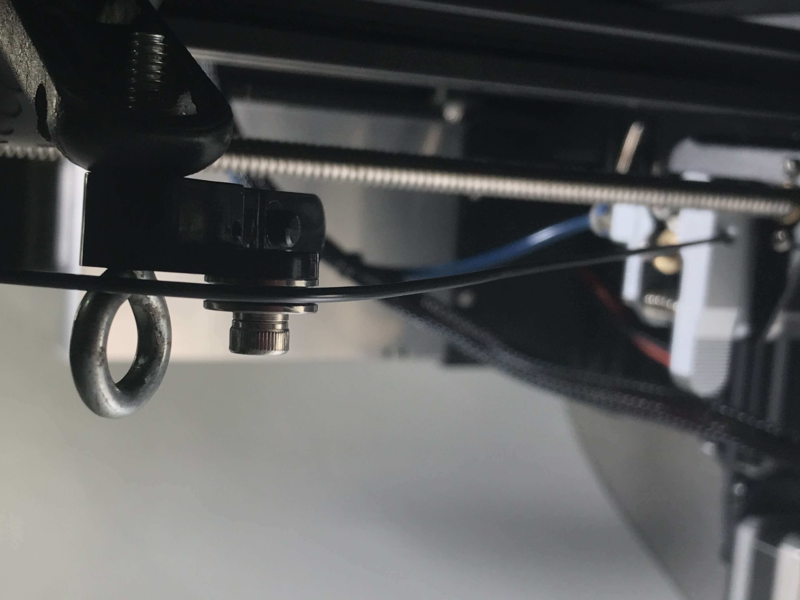
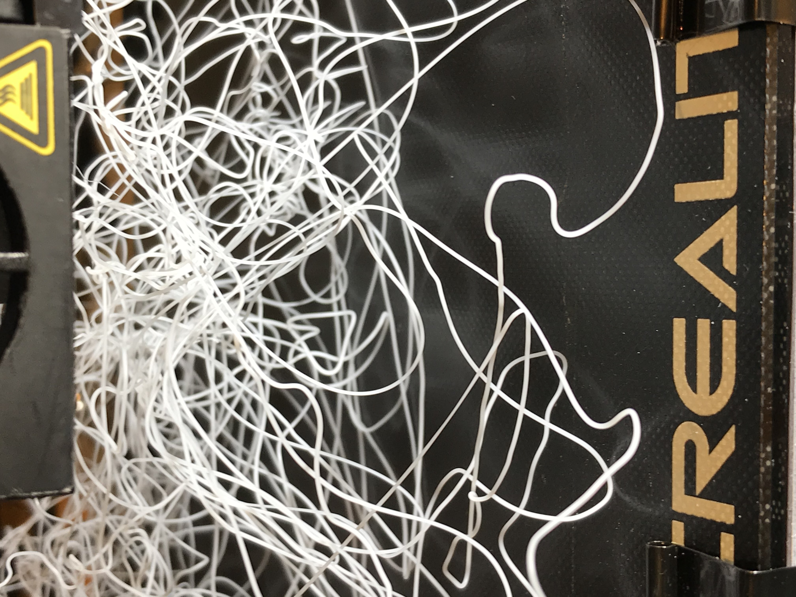

Pulley!

I made some upgrades so I could use different filaments. I was having adhesion problems with the TPU and PETG not sticking to the bed. This appeared as either warping or complete failure. Also the flexible filament would bend or stretch in the sharp curve from the filament roll to the feeder assembly. Putting a metal assembly in and also adding an idler pulley would allow for smoother filament flow in the Bowden tube. I used the bearing from the platic feeder and McGyvered it on with a clamp.
